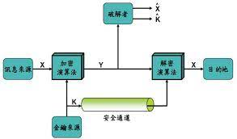

在近代以前，密碼學只考慮到訊息的機密性：如何將可理解的訊息轉換成難以理解的訊息，並且使得有秘密訊息的人能夠逆向回復，但缺乏秘密訊息的攔截者或竊聽者則無法解讀。近數十年來，這個領域已經擴展到涵蓋身分認證（或稱鑒權）、訊息完整性檢查、數位簽章、互動證明、安全多方計算等各類技術。
古中國周朝兵書《六韜．龍韜》記載了密碼學的運用，其中的《陰符》和《陰書》便記載了周武王問姜子牙關於征戰時與主將通訊的方式：
太公曰：「主與將，有陰符，凡八等。有大勝克敵之符，長一尺。破軍擒將之符，長九寸。降城得邑之符，長八寸。卻敵報遠之符，長七寸。警眾堅守之符，長六寸。請糧益兵之符，長五寸。敗軍亡將之符，長四寸。失利亡士之符，長三寸。諸奉使行符，稽留，若符事聞，泄告者，皆誅之。八符者，主將祕聞，所以陰通言語，不泄中外相知之術。敵雖聖智，莫之能識。」 武王問太公曰：「…符不能明；相去遼遠，言語不通。為之奈何？」 太公曰：「諸有陰事大慮，當用書，不用符。主以書遺將，將以書問主。書皆一合而再離，三發而一知。再離者，分書為三部。三發而一知者，言三人，人操一分，相參而不相知情也。此謂陰書。敵雖聖智，莫之能識。」
陰符是以八等長度的符來表達不同的訊息和指令，可算是密碼學中的替代法，把資訊轉變成敵人看不懂的符號。至於陰書則運用了移位法，把書一分為三，分三人傳遞，要把三份書重新拼合才能獲得還原的資訊。
進入宋朝，有字驗的加密方法。
其實在公元前，秘密書信已用於戰爭之中。西洋「史學之父」希羅多德的《歷史》當中記載了一些最早的秘密書信故事。公元前5世紀，希臘城邦為對抗奴役和侵略，與波斯發生多次衝突和戰爭。於西元前480年，波斯秘密結了強大的軍隊，準備對雅典和斯巴達發動一次突襲。希臘人狄馬拉圖斯在波斯的蘇薩城裏看到了這次集結，便利用了一層蠟把木板上的字遮蓋住，送往並告知了希臘人波斯的圖謀。最後，波斯海軍覆沒於雅典附近的沙拉米斯灣。